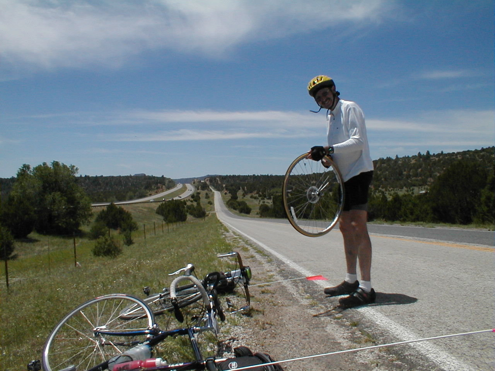

Day 15: May 27,Santa Fe, NM to Las Vegas, NMPrevious Day - Home - Next Day Photo of the DayDad changing his second flat of the day. Keegan's LogDay 15: May 27,Santa Fe, NM to Las Vegas, NM Mileage: 76.40 milesWeather: 65-95 degrees, Sunny, Winds from the west Vertical Climb: 3400 feet Riding Time: 5:15 We opted for the continental breakfast this morning as the Village Inn was a half mile down the road. We left on time and quickly found ourselves in a group of quick riders. We made great time until about 20 miles into the ride, when dad had another flat tire. We changed the tire and continued on, stopping at a store at about the 25 mile mark for a quick break. Much of the early morning was spent on I-25, the hills on the interstate were long but not steep at all. At one point we came around a curve and passed a canyon with a train going by, it was very picturesque but we were in a group so I couldn't stop to get a picture. The interstate riding ended (once and for all supposedly) just before the store, I don't think anyone will be too sorry to see it go. After the store the road was up and down, with special emphasis on the down. We had a good tailwind too, for most of the ride today. The first sag was a full 45 miles into the ride. The riding was pretty fast out to the sag, it was a welcome relief to have both tailwinds and descents. The sag was at El Alto Bar, an old run-down gas station situated in the exact middle of nowhere. We leaned our bikes against the rusted hull of a 1930s Chevrolet and went to join the crowd in relaxing under the only tree nearby. There were only about 30 miles to go from the sag, but the road was up and down, emphasis this time on the up. Dad got yet another flat, hence the picture of the day. We turned to go north for most of this last part, so the wind was to our side more than behind us, but any wind that isn't a headwind is okay with me. After going up and down enough times to make Magellan seasick, we reached the edges of Las Vegas. We decided to take the extra trip to the old downtown, adding .8 miles to the total. We stopped an a little Mexican restaurant on the square for lunch, I had a trio of pretty good tacos. After circling the square (if that's possible) 3 times looking for National Avenue, we picked a street out and made our way to the hotel. Today was a rough day for a lot of the riders. Leslie had another fall, and another broken shifter to match, but she kept riding as always. Chuck T's front wheel found its way into an evil Cattle Guard, he went right over the bars still clicked in to his pedals, the frame of his Trek 5220 broken in the process. Bruce and Fran suffered a broken rim on their tandem, cutting their day short as well. Donn Maryott left the group this morning due to a family emergency, we'll all miss him. On the upside, dad picked up the position of having the most flats when Donn left, dad now has 7 under his belt. Tomorrow will be a tough day, 109 miles with almost 3000 feet of climbing. If the winds are with us the ride will be a lot easier, the staff has promised to do their tailwind dance tonight. Hope it helps... Phil's LogNot a usual day. It started with news from Donn that he received a phone call and had to return home, some family problem. He wouldn't be returning to the ride. That was sad. Donn had a wonderful, zany personality and was a real part of our "family". He will be missed. Two of the original group are now gone. Bruce and his wife Fran, who ride a tandem, cracked their rear rim. It is heavy duty, 32 spoke, and won't be available in any ordinary bicycle store. Bruce, who is so dedicated that he will ride the tandem solo despite the steepness of any mountain, I think had to sag in.. Chuck, on an expensive Trek 5220, a carbon fiber bike, dropped the front wheel into a cattle guard and destroyed his frame at the top of the yoke (the steering bearing). Not sure, but I believe he was forced to sag, and may have to buy a Wal*Mart bike to finish the trip. And poor Leslie from New Your City had some sort of unknown failure that caused her to tumble. She got another nasty dose of road rash, and destroyed her new shift/brake lever that replaced the Campy. At this moment, Pat is working on her bike which she, of course, was able to limp to the hotel. She's a real trooper, and amazes all. I'll hope to interview her and JJ for tomorrow night... ...if there's anything left to us after the ride to Tucumcari tomorrow. It is a 108 mile ride with about 2,900 feet of climbing, and is traditionally the worst day on the tour. On the good side, it is supposed to be scenic. We all wish and pray for favorable winds, but no one wants to hear the forecast for fear that is is bad. We know it will be sunny and hot. With the loss of Donn, I now have the record for the most road flats, seven. Two were today, and both my fault. One was a glass cut in my tire that Rick thought was okay to ride with, but the tube failed there. (I put a patch on the inside of that tire tonight.) Another was the tube that I repaired that flat with, a patch type that I no longer use, that leaked. There was an optional route to the hotel that included a loop through Las Vegas's town square that was fun. It wasn't too tough a day, though we did have a lot of roller coaster hills, and some good views. See Keegan's website, "http://expert.cc.purdue.edu/~brownkl" for a good shot of the road and hills. Note to Therese Staublin: Pinos, the dinner restaurant, has not gotten any better! We had wet barbecued baked chicken and some potato concoction with overcooked spaghetti. And we just read your description of the Tucumcari ride, 12 hours! Ugh. Night all. |
{kind=link}